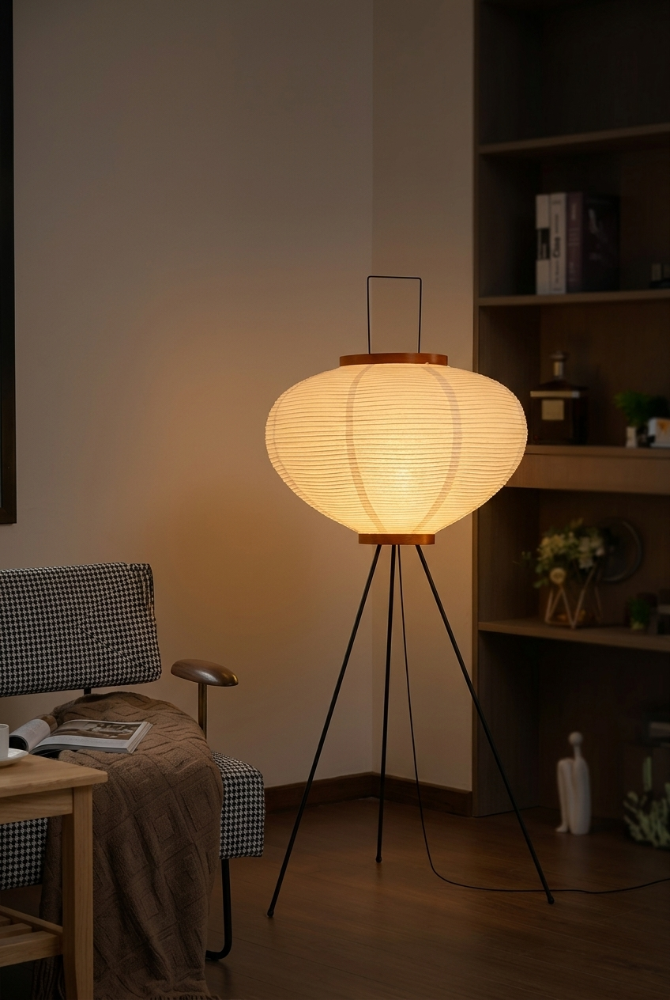

Noguchi-inspired rice paper shade, tripod metal legs, soft ambient glow — the one lamp that makes a room feel finished.

Diffuses light into a soft, warm glow instead of harsh overhead brightness — the difference between a room that feels lit and a room that feels lived-in.
Unfold the metal legs, screw in an E26 bulb, done. No wiring, no instructions you need to translate.
The mid-century snowman silhouette works as a lit sculpture during the day and a light source at night — doubles as decor.
Every living room has one — the empty corner next to the sofa, the dead space by the bookshelf. This lamp fills it with warmth instead of clutter.
At 48" tall with a 19.7" wide shade, it reads as a statement piece without overwhelming a small apartment or a shared living room.
Three metal legs snap into place — no tools, no screws.
The rice paper lantern slides onto the frame and locks at the top.
Any E26 bulb works — a soft warm-white LED gives the best glow.
No — it takes any standard E26 bulb, so you can choose your own warmth and brightness.
It's handcrafted rice paper over a wire frame — sturdy in normal use, but treat it gently when moving the lamp.
Yes — the tripod footprint is compact (19.7" wide), and it's available in smaller sizes too if you need something more petite.
Handmade rice paper shade, tripod stand, warm ambient glow — see current pricing and availability on Amazon.
Check Price on Amazon →